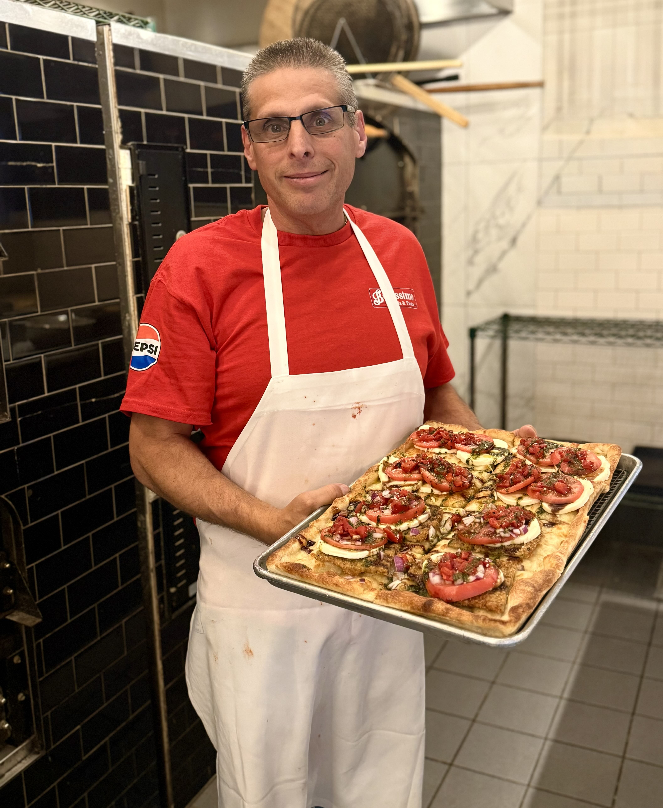

A labor of love
Rooted in tradition.
Made for this community.
Bellissimo Pizza & Pasta at The Shoppes at East Wind is more than a place to eat—it is a labor of love, rooted in tradition, passion and community.
Owned and operated by Salvatore Lopiccolo, Bellissimo was born when Sal came out of retirement to do what he loves most: making great food and bringing people together. After years of success with Rocky Point Pizza, Sal thought his days behind the counter were over—until a friend mentioned that the pizza spot at The Shoppes at East Wind was available. One visit was all it took.
“Why not? Let’s get back into it.”
Sal has transformed Bellissimo into one of the most community-oriented pizza and pasta restaurants in town. At the heart of The Shoppes at East Wind, Bellissimo thrives on the close-knit atmosphere of local shop owners working together and serving neighbors who feel like family.
The menu reflects Sal’s creativity and experience, with specialty pizzas you will not find everywhere—favorites such as sausage and broccoli rabe and eggplant rollatini—alongside classic and contemporary pasta, hearty entrées, fresh salads and comforting Italian favorites.
Every dish is made with care, every guest is welcomed warmly and every visit should feel like coming home. Whether you stop in for a quick slice, a family dinner or a meal shared with friends, Bellissimo is honored to serve the community one delicious bite at a time.
— Salvatore & the Bellissimo team